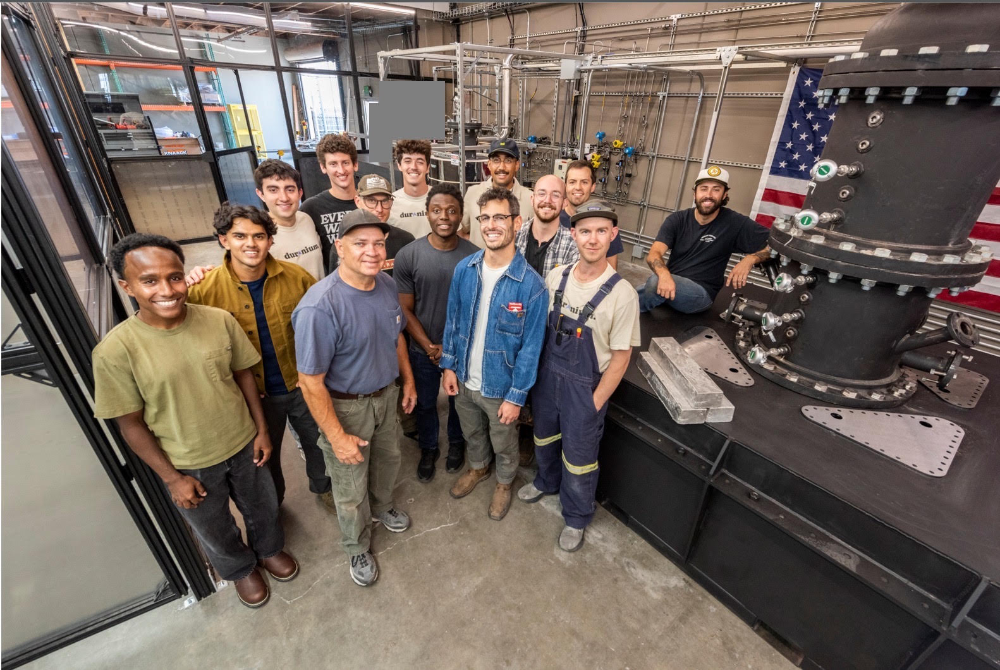

The Problem
A note on confidentiality: This page describes my approach and contributions only. Process chemistry, proprietary data, and project results are not shown as they are Duranium’s intellectual property.
Duranium is developing a new fluidized‑bed reactor step, where gas flows up through a bed of solid particles and reacts with them at high temperature.
The team needed a computational model that could predict conversion and bed behavior, so fewer physical experiments would be needed as the process scales.
Phase 1: The Cold Model
I started with a non‑reacting model to make sure the hydrodynamics were right before adding chemistry. Using COMSOL’s Euler‑Euler interface, I simulated the bed fluidizing and cross‑checked every key result against hand calculations.
- Calculated minimum fluidization velocity with the Ergun equation and cross‑checked it with the Wen & Yu correlation in a spreadsheet tool I built.
- Simulated pressure drop close to the theoretical bed‑weight value.
- Ran a particle‑size study at different sizes, tracked bed expansion and particle loss through the distributor, and confirmed solid mass was conserved throughout.
Phase 2: The Hot Model
With the hydrodynamics validated, I built the reacting model from first principles. I derived the reaction rate and mass source terms by hand, following the fluidized‑bed design method in Kunii and Levenspiel, and reformulated the conversion balance for a batch spatially resolved bed. Then I implemented it as a coupled system: Euler‑Euler flow, Transport of Concentrated Species, Heat Transfer in Fluids, and Domain ODEs for particle conversion.
I also restructured the solver to fix convergence problems.
On The Plant Floor
- Integrated 13 pressure, 8 temperature, and 19 flow instruments across three pilot process units, working with controls engineers.
- Installed and calibrated two chlorine analyzers on a gas scrubber.
- Led functional testing of six process lines and equipment assemblies, finding and fixing piping, instrumentation, and equipment issues before startup.
- Leak‑tested piping systems and supported fluidized‑bed experiments with the research engineers.
What I Learned
A model is only useful if the people running the plant trust it. Spending half my time with the hardware made me a better modeler.
